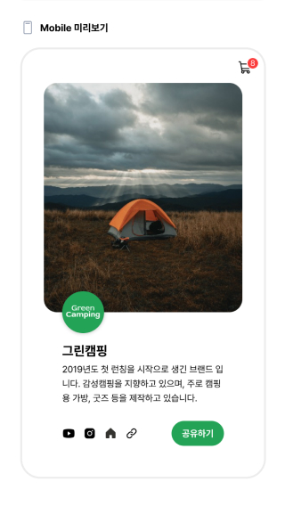
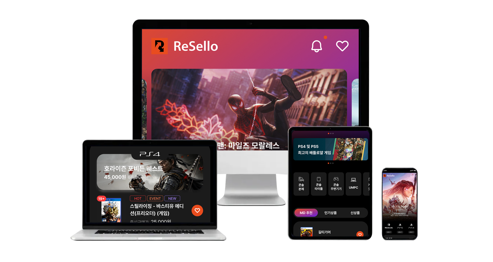
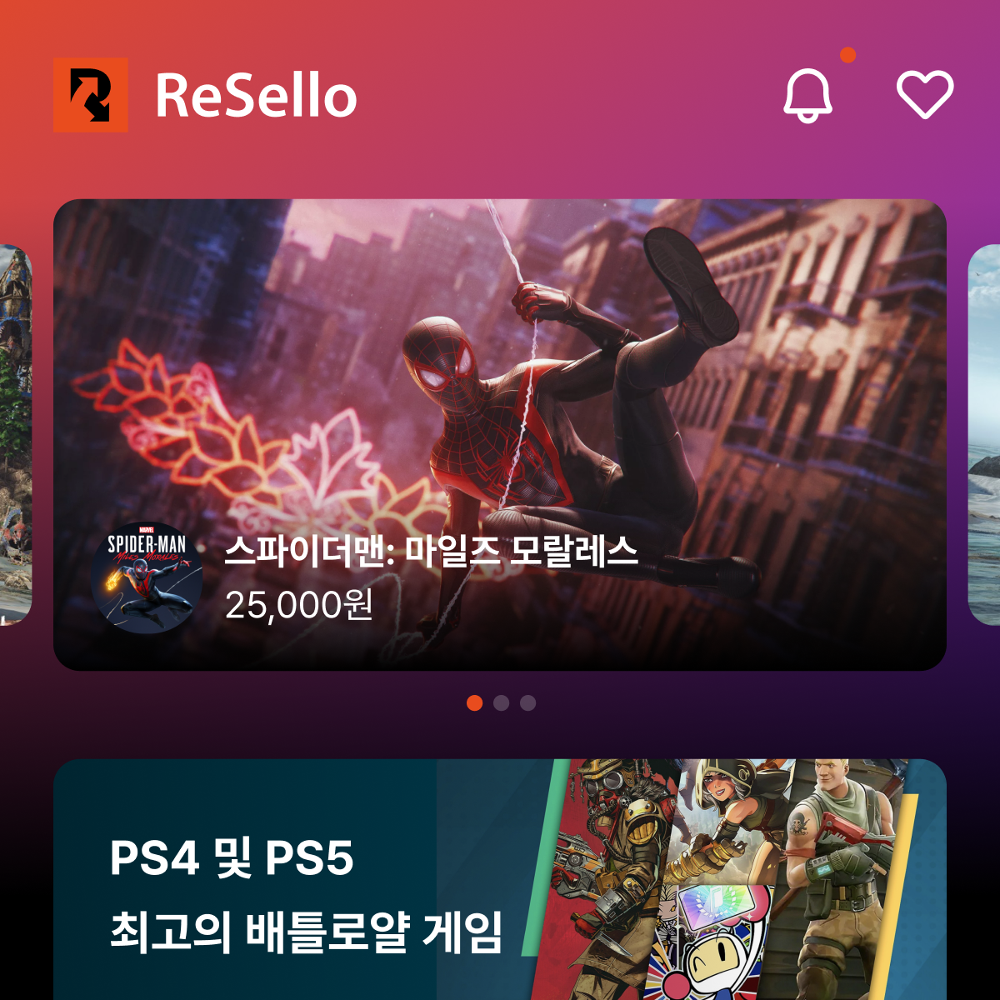

게임기 중고거래 플랫폼
사용자의 Pain Point를 해결하는
직관적인 거래 경험 설계

리셀로 — 메인 화면 UI 쇼케이스
리셀로(Resello)는 국내 게임기 중고 거래 시장의 신뢰 문제와 복잡한 거래 과정을 해결하기 위해 런칭된 플랫폼입니다. 사용자가 겪는 핵심 Pain Point를 포착하고, 간결하고 직관적인 UI를 통해 거래의 처음부터 끝까지 명확한 경험을 제공하는 것이 목표였습니다.
제품 상태 검수 시스템, 안전 결제 흐름, 판매자-구매자 간 실시간 채팅 UI 등 핵심 기능의 UI/UX를 처음부터 설계하고 디자인 시스템으로 구축했습니다.
사용자 리서치부터 최종 디자인 납품까지, 단계별 프로세스로 진행했습니다.
